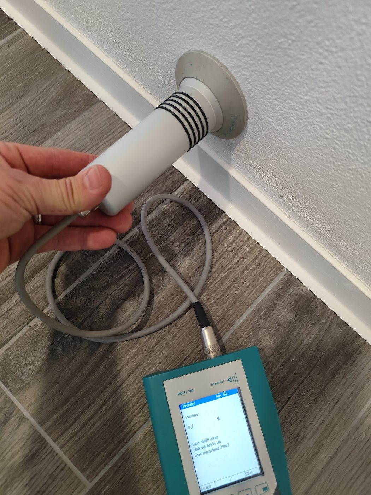

Projevy vlhkosti
- vlhké zdi, mapy a výkvěty solí
- opadávající omítky a plísně
- vlhký sklep, stojící nebo tlaková voda
- vlhké podlahy a betonové podklady
Průzkum odpoví, odkud vlhkost přichází, jak vážný je stav konstrukce a jaké řešení bude dlouhodobě fungovat. Dostanete písemnou zprávu o více než 20 stranách.

Nejdřív si nechte potvrdit příčinu, potom investujte do opravy. Bez průzkumu se sanace jen odhaduje.
Od prvního telefonátu po písemnou zprávu s návrhem řešení.
Zavoláte nebo vyplníte poptávku a přiložíte fotografie.
Upřesníme rozsah, termín a cenu průzkumu.
Proměřím vlhkost, odeberu vzorky a vše zdokumentuji.
Výsledky, příčiny vlhkosti a doporučená technologie.
Podle návrhu se domluvíme i na provedení sanace.
Písemná zpráva, podle které se můžete rozhodnout, porovnat nabídky firem a zkontrolovat správné provedení prací. Takový průzkum má obvykle přes 20 stran.
Podívejte se, co se při sanačním průzkumu měří a proč je základem každé účinné sanace.
Ne. Odeberu jen malé vzorky pro rozbor. Vlhkost v hloubce zdi měřím mikrovlnným skenem bez vrtání.
Cena závisí na velikosti objektu a počtu vzorků. Přesnou cenu vám řeknu předem, ještě před průzkumem.
Bez průzkumu nevím, odkud vlhkost přichází a jak je zdivo zasolené. Cena odhadnutá od stolu je jen hádání – a často vede ke špatně zvolené sanaci.
Po celé České republice. Sídlím v Hradci Králové.
Na realizaci se můžeme domluvit po průzkumu – podle rozsahu a typu stavby.
Ano. Zpráva slouží jako podklad pro projektanta, stavební firmu i pro jednání s památkovou péčí.